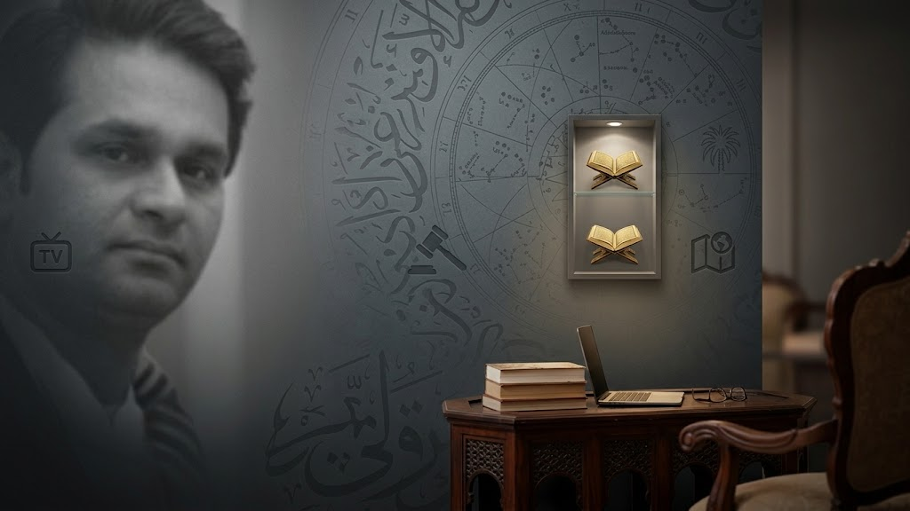
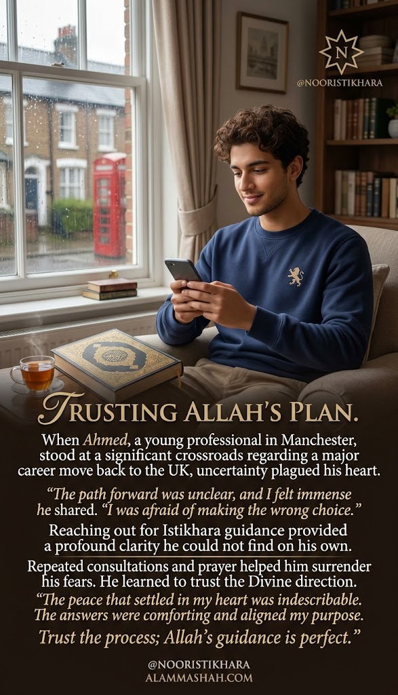

بِسْمِ اللَّهِ الرَّحْمَٰنِ الرَّحِيمِ
In the name of Allah, the Most Gracious, the Most Merciful

Best Astrologer & Islamic Scholar in Houston, Texas, USA
📍 Proudly based in Houston, Texas — serving local clients across the Houston metro area, nationwide USA, and worldwide
FREE Istikhara • Spiritual Guidance • Islamic Scholar
Hisab • Zaicha • Ismay Azam • Wazifa • Dua
30+ Years Experience • TV & Media Featured • Serving Houston, Texas, USA & Worldwide
فَبِأَيِّ آلَاءِ رَبِّكُمَا تُكَذِّبَانِ
"Then which of the favors of your Lord will you both deny?"
— Surah Ar-Rahman (55:13)
Professional guidance rooted in the Qur'an & Sunnah — private, honest, and never rushed.
Numerological calculations based on Islamic principles to unlock hidden meanings.
Get Guidance →100% Shariah-compliant guidance rooted in the Quran and Sunnah — for marriage, finances, business, healing, career, and marital harmony.
Sincere prayer-based guidance for family, career, and marriage matters
💬 Reach Out NowRuqyah and Sunnah-based healing for emotional and spiritual distress
💬 Get GuidanceGuidance for those seeking their chosen marriage, with family understanding
💬 Speak With UsQuranic Ruqyah for negative energy, evil eye, and protection
💬 Ask For HelpPalm reading and astrological guidance rooted in 30+ years of experience
💬 Book a SessionRestoring trust and harmony through Quranic guidance and counseling
💬 Contact Us TodayProfessional Consultation Services
Quranic wisdom and sincere dua for those facing obstacles in their livelihood, career path, or financial well-being — with honest, practical guidance.
Spiritual & Financial Guidance
Quranic Ruqyah, Istikhara, and spiritual guidance for rizq, barakah, and lasting financial stability.
Get in Touch →Islamic Business Solutions
Islamic solutions for business loss, competition, partnership issues, and protection from negativity and evil eye.
Contact Us →Islamic Professional Guidance
Islamic wisdom paired with practical strategy — goal setting, skill development, and protection from workplace negativity.
Reach Out →Professor MA Shah provides authentic Islamic spiritual guidance for a wide range of life matters, including black magic removal (kala jadu ka ilaj), manpasand shadi ka taweez, wazifa, and dua for love marriage, resolving rishton ki bandish (blocked relationships), karobari bandish (business obstacles), talaq ka masla (divorce issues), mian biwi ka jhagra (marital disputes), and aulad ki bandish (delays in having children).
All guidance is offered through Quranic Ruqyah, authentic Istikhara, and Sunnah-based wazifa — with honesty about what Islamic spiritual guidance can and cannot promise. Available for free initial consultation via Instagram, serving clients in Houston, Texas and worldwide.
Real sessions, real guidance — Houston, Texas & beyond
Featured on "Rohani Dunya Insani Masail" and other national programs
Featured Video
From in-person palm readings to spiritual consultations, Professor MA Shah has guided clients across the Middle East, Europe, Asia, America, and Canada for over three decades.
Professor MA Shah is a renowned astrologer and Islamic spiritual scholar based in Houston, Texas, with over 30 years of experience serving clients across the Middle East, Europe, Asia, America, and Canada.
Featured on national television programs, he offers free istikhara guidance, expert astrology readings and authentic Islamic spiritual consultations — Hisab, Zaicha, Ismay Azam, Wazifa & Dua.
Years
Featured
Houston Based
Noori Rohani Ilm — Professor MA Shah
Through the power of Noori Rohani Ilm and authentic Quranic Ruqyah, Professor MA Shah helps people identify, remove, and protect themselves from Kala Jadu, evil eye, and all forms of black magic — completely rooted in the Quran and Sunnah.
Kala Jadu ki pehchan (identifying black magic) is the first step toward removing its effects. Common signs include sudden illness with no medical explanation, constant bad luck, unexplained fear and anxiety, marital disputes appearing from nowhere, blocked income (rizq bandish), and repeated nightmares.
Professor MA Shah diagnoses each case individually through Noori Rohani Ilm — identifying whether the problem has a spiritual cause before prescribing treatment.
Kala Jadu ka tor (breaking black magic) is done through authentic Quranic Ruqyah — the recitation of specific Quranic verses and duas as prescribed by the Prophet ﷺ. This is the only Islamically valid and truly effective method of removing black magic.
Professor MA Shah performs Ruqyah and prescribes personalised wazifa for each client — online for clients worldwide via WhatsApp and direct call.
The most powerful duas for ending black magic are found in the Quran — Surah Al-Falaq, Surah An-Nas, Ayat ul Kursi, and specific verses of Surah Al-Baqarah. These are recited consistently as part of the Ruqyah treatment.
Professor MA Shah provides each client with a personalised wazifa plan — the correct duas, how to recite them, and how long to continue — based on their specific situation.
Noori Rohani Ilm refers to the light-based spiritual knowledge rooted in the Quran and Sunnah — used for spiritual healing, protection, and guidance. It is distinct from dark or prohibited practices and is entirely based on Quranic principles.
Professor MA Shah practices exclusively Noori Rohani Ilm — never dark practices — ensuring all treatment is Halal, safe, and spiritually sound for Muslims and people of all backgrounds.
Contact us for a free private consultation. Professor MA Shah will review your case personally.
💬 Get Free Consultation 📞 Call NowQuranic Spiritual Healing
Rohani Ilaj is Quranic and Sunnah-based spiritual healing used to treat the effects of black magic (kala jadu), evil eye (nazar), jinn influence, and spiritual blockages that affect a person's health, relationships, and livelihood.
Professor MA Shah provides authentic online Rohani Ilaj through Ruqyah — recitation of Quranic verses — along with personalised wazifa and dua for complete spiritual recovery and protection.
Rohani Ilaj means spiritual healing — treatment for conditions that have a spiritual cause, such as black magic, evil eye, or spiritual blockages. It is performed using authentic Quranic Ruqyah as prescribed in the Sunnah of Prophet Muhammad ﷺ.
Yes. Professor MA Shah provides online Rohani Ilaj for clients worldwide. Treatment includes Quranic recitation, personalised wazifa, and guidance — all conducted remotely via WhatsApp or direct call.
It depends on the severity of the case. Some conditions resolve quickly with consistent wazifa; others may require ongoing Ruqyah sessions. Professor MA Shah guides each client personally through the process.
Answers to what people most often ask before reaching out
Istikhara is a sincere prayer for guidance — a humble request for Allah to pave the way for what is beneficial and to divert from what is harmful. It is a Sunnah of Prophet Muhammad ﷺ and is performed before making important decisions in life.
Istikhara is performed by making wudu, praying two rak'ahs of nafl prayer, and then sincerely making the dua of Istikhara. You can also request Professor MA Shah to perform Istikhara on your behalf and share guidance based on the outcome.
Istikhara can be prayed at any time except the three forbidden times — after Fajr until sunrise, when the sun is at its peak at midday, and after Asr until sunset. Many scholars recommend praying it before sleeping so the heart is clear.
The sign of Istikhara being accepted is that you begin to feel ease and inclination toward one option, or circumstances naturally open up in one direction. It does not always come as a dream — often it manifests as a feeling of peace or the unfolding of events.
Yes. While the guidance offered is rooted in Islamic tradition (Quran and Sunnah), people from all backgrounds reach out for support with lost love, relationship reconciliation, family conflict, and life decisions. Everyone is welcome to message and describe their situation.
We offer honest spiritual guidance and dua for those hoping to reconcile with a lost love or repair a relationship. This is sincere prayer and counsel, not a guaranteed spell, to help bring clarity and, where it is meant to be, healing to the relationship.
Istikhara for love marriage is a Sunnah prayer performed to seek Allah's guidance on whether a relationship should move toward marriage. Professor MA Shah performs this sincerely and shares honest guidance based on the outcome, whether the answer points toward proceeding or reconsidering.
Yes. Istikhara for divorce and marital disputes (mian biwi ka jhagra) helps bring clarity when a marriage is in crisis — whether the path forward is reconciliation or separation — combined with Quranic guidance and honest counsel, not a guaranteed outcome.
Kala jadu ka tor refers to the Quranic Ruqyah process used to identify and remove the effects of black magic, evil eye, and negative energy, along with ongoing spiritual protection so the influence does not return.
This is spiritual guidance — wazifa, taweez, and dua — for those seeking their chosen marriage (manpasand shadi), often used alongside efforts to bring family understanding and remove obstacles (shadi ki bandish ka tor) standing in the way.
Yes — Istikhara and dua for career and business decisions (karobari bandish), including guidance when facing financial obstacles, business loss, or important career choices.
Professor MA Shah is based in Houston, Texas, and serves clients worldwide — including across the USA, UK, Middle East, Europe, Asia, and Canada.
Real Stories · Real People
People from around the world who found clarity and peace through Professor MA Shah's guidance.

Many of our consultations are kept strictly confidential at clients' request. We respect that privacy above showcasing testimonials — your trust matters more to us than any public review. Every conversation you share with us stays between you and Allah.
Message any time for free istikhara or astrology guidance. Private and confidential.
💬 WhatsApp for messages • 📞 Direct calls: +1 (689) 267-4004